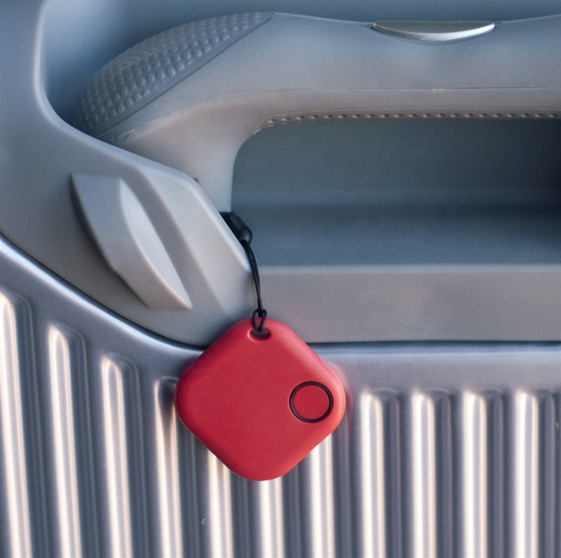

Location tracking: APP will record the last location of disconnection and you can track in the build-in map.
Location tracking: APP will record the last location of disconnection and you can track in the build-in map.
Network search: if you cannot find you lost items, you can mark as lost, then our iTrack easy network will help you to find the lost valuable items.
Manually Mark Locations: drop pins to mark and timestamp locations
